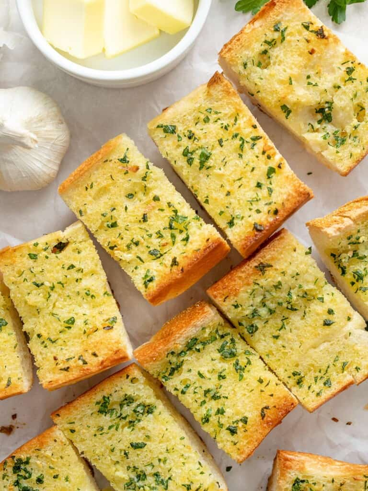

Easy Garlic Bread

Easy Garlic Bread
Easy garlic bread that is a tasty starter!
Ingredients
- 1 loaf French or Italian bread (approx. 24" long)
- 6 Tbsp butter, room temperature
- 2 Tbsp olive oil
- 4 cloves garlic, minced
- 2 Tbsp chopped fresh parsley
- 1/8 tsp salt
- 1/4 tsp garlic bread
Instructions
- Preheat the oven to 400ºF. In a bowl, stir together the room-temperature butter, olive oil, minced garlic, garlic powder, chopped parsley, and salt until relatively smooth (a few small lumps of butter are okay)
- Cut the loaf in half, into two 12" long pieces, then cut each piece open lengthwise. Lay the bread on a baking sheet cut sides facing up. Spread the garlic butter mixture evenly over the open surfaces of the bread.
- Bake the bread for 10-15 minutes, or until the edges are golden brown and crispy. Bake for less time if you prefer a softer garlic bread, and more time if you prefer a crispier garlic bread. Cut the bread into 2-inch sections and serve hot.
Return to home page